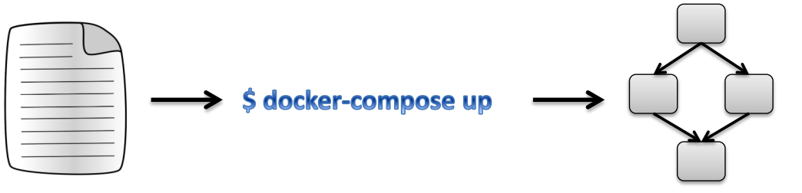
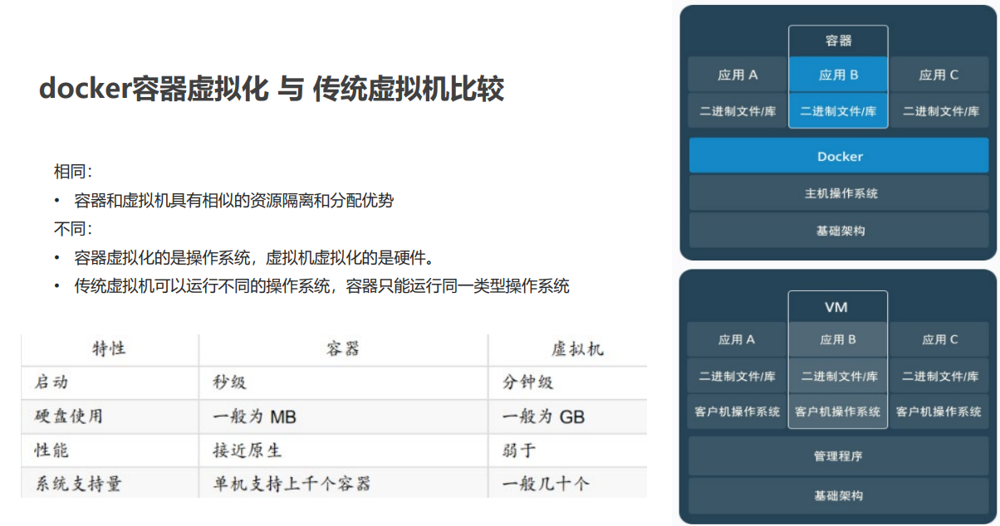

1.Docker简介
| 概念 | 角色 | 特性 | 与其他组件的关系 |
|---|---|---|---|
| 仓库 | 镜像存储中心 | 支持分布式访问和版本管理 | 提供镜像给用户拉取或推送 |
| 镜像 | 容器的静态模板 | 只读、分层结构、不可变 | 作为容器创建的基础模板 |
| 容器 | 镜像的动态运行实例 | 可读写、隔离环境、生命周期短36 | 基于镜像启动，支持多实例并行 |


2.Docker安装
2.1 卸载
如果之前安装过旧版本的Docker，可以使用下面命令卸载：
1
2
3
4
5
6
7
8
9
10
11yum remove docker \
docker-client \
docker-client-latest \
docker-common \
docker-latest \
docker-latest-logrotate \
docker-logrotate \
docker-selinux \
docker-engine-selinux \
docker-engine \
docker-ce1
2
3
4
5
6
7
8
9
10
11
12
13
14
15
16
17
18
19
20
21
22
23
24
25
26
27[root@localhost ~]# yum remove docker \
docker-client \
> docker-client-latest \
> docker-common \
> docker-latest \
> docker-latest-logrotate \
> docker-logrotate \
> docker-selinux \
> docker-engine-selinux \
> docker-engine \
> docker-ce
已加载插件：fastestmirror, langpacks
Repository epel is listed more than once in the configuration
Repository epel-debuginfo is listed more than once in the configuration
Repository epel-source is listed more than once in the configuration
参数 docker 没有匹配
参数 docker-client 没有匹配
参数 docker-client-latest 没有匹配
参数 docker-common 没有匹配
参数 docker-latest 没有匹配
参数 docker-latest-logrotate 没有匹配
参数 docker-logrotate 没有匹配
参数 docker-selinux 没有匹配
参数 docker-engine-selinux 没有匹配
参数 docker-engine 没有匹配
参数 docker-ce 没有匹配
不删除任何软件包
2.2 安装docker
安装yum工具
1
2
3
4
5yum包更新
yum update
安装需要的软件包，yum-util提供yum-config-manager功能，device-mapper-persistent-data lvm2是devicemapper驱动依赖
yum install -y yum-utils device-mapper-persistent-data lvm2 --skip-broken然后更新本地镜像源：
1
2
3
4
5
6设置docker镜像源
yum-config-manager --add-repo https://mirrors.aliyun.com/docker-ce/linux/centos/docker-ce.repo
sed -i 's/download.docker.com/mirrors.aliyun.com\/docker-ce/g' /etc/yum.repos.d/docker-ce.repo
yum makecache fast然后输入命令：
1
yum install -y docker-ce
docker-ce为社区免费版本
docker-ee为企业版本
2.3 启动docker
Docker应用需要用到各种端口，逐一去修改防火墙设置
非常麻烦，因此建议直接关闭防火墙
1
2
3
4关闭
systemctl stop firewalld
禁止开机启动防火墙
systemctl disable firewalld通过命令启动docker：
1
2
3
4
5systemctl start docker # 启动docker服务
systemctl stop docker # 停止docker服务
systemctl restart docker # 重启docker服务然后输入命令，可以查看docker版本：
1
docker -v
2.4 配置镜像加速
- docker官方镜像仓库网速较差，需要设置国内镜像服务
- 参考阿里云的镜像加速文档：https://cr.console.aliyun.com/cn-hangzhou/instances/mirrors
3.相关命令
3.1 服务
1 | systemctl start docker #启动 |
3.2 镜像
1 | docker images #查看所有镜像 |
3.3 容器
| Options | Mean |
|---|---|
| -i | 保持容器运行。通常与-t同时使用。加入it这两个参数后，容器创建后自动进入容器中，退出容器后，容器自动关闭 |
| -t | 为容器重新分配一个伪输入终端，通常与 -i 同时使用 |
| -d | 以守护（后台）模式运行容器。创建一个容器在后台运行，需要使用docker exec进入容器。退出后，容器不会关闭 |
| –name | 容器名字 |
| -e | 环境变量配置 |
| -p | 端口映射 |
| –restart=always | 在重启docker时，自动启动该容器 |
| –privileged=true | 容器内权限为root用户权限，否则只是普通用户 |
| -v | 挂载数据卷 |
1 | # -it创建的容器一般称为交互式容器，-id创建的容器一般称为守护式容器 |
4.容器数据卷
4.1 数据卷概念
- 思考：
- Docker 容器删除后，在容器中产生的数据也会随之销毁
- Docker 容器和外部机器可以直接交换文件吗
- 容器之间想要进行数据交互
- 数据卷
- 数据卷是宿主机中的一个目录或文件
- 当容器目录和数据卷目录绑定后，对方的修改会立即同步
- 一个数据卷可以被多个容器同时挂载
- 一个容器也可以被挂载多个数据卷
- 数据卷作用
- 容器数据持久化
- 外部机器和容器间接通信
- 容器之间数据交换
4.2 使用数据卷
创建启动容器时，使用 –v 参数 设置数据卷
1
docker run ... -v 宿主机目录（文件）:容器内目录（文件）...
注意事项：
- 目录必须是绝对路径
- 如果目录不存在，会自动创建
- 可以挂载多个数据卷
多容器进行数据交换
- 多个容器挂载同一个数据卷
- 数据卷容器
配置数据卷容器
1.创建启动c3数据卷容器，使用 –v 参数 设置数据卷
1
docker run –it --name=c3 –v /volume centos:7 /bin/bash
2.创建启动 c1 c2 容器，使用 –-volumes-from 参数 设置数据卷
1
2
3docker run –it --name=c1 --volumes-from c3 centos:7 /bin/bash
docker run –it --name=c2 --volumes-from c3 centos:7 /bin/bash
5.Dockerfile
5.1 Docker镜像原理
思考：
- Docker 镜像本质是什么
- Docker 中一个centos镜像为什么只有200MB，而一个 centos操作系统的iso文件要几个个G
- Docker 中一个tomcat镜像为什么有500MB，而一个 tomcat安装包只有70多MB
操作系统组成部分：
- 进程调度子系统
- 进程通信子系统
- 内存管理子系统
- 设备管理子系统
- 文件管理子系统
- 网络通信子系统
- 作业控制子系统
Linux文件系统由bootfs和rootfs两部分组成
- bootfs：包含bootloader（引导加载程序）和 kernel（内核）
- rootfs： root文件系统，包含的就是典型 Linux 系统中的/dev， /proc，/bin，/etc等标准目录和文件
- 不同的linux发行版，bootfs基本一样，而rootfs不同，如ubuntu ，centos等
- 思考：
- Docker 镜像本质是什么
- 是一个分层文件系统
- Docker 中一个centos镜像为什么只有200MB，而一个centos操作系统的iso文件要几个个G
- Centos的iso镜像文件包含bootfs和rootfs，而docker的centos镜像复用操作系统的bootfs，只有rootfs和其他镜像层
- Docker 中一个tomcat镜像为什么有500MB，而一个tomcat安装包只有70多MB
- 由于docker中镜像是分层的，tomcat虽然只有70多MB，但他需要依赖于父镜像和基础镜像，所有整个对外暴露的 tomcat镜像大小500多MB
- Docker 镜像本质是什么
5.2 镜像制作
方式一：容器转镜像
- 挂载的文件不会被保存到新的镜像中，其它文件会被保存到新镜像
1 | docker commit 容器id 镜像名称:版本号 |
方式二：dockerfile
Dockerfile 概念：
- Dockerfile 是一个文本文件
- 包含了一条条的指令
- 每一条指令构建一层，基于基础镜像，最终构建出一个新的镜像
- 对于开发人员：可以为开发团队提供一个完全一致的开发环境
- 对于测试人员：可以直接拿开发时所构建的镜像或者通过Dockerfile文件 构建一个新的镜像开始工作了
- 对于运维人员：在部署时，可以实现应用的无缝移植

例如centos7镜像：
1
2
3
4
5
6
7
8
9
10
11
12
13
14
15FROM scratch
ADD centos-7-x86_64-docker.tar.xz /
LABEL \
org.label-schema.schema-version="1.0" \
org.label-schema.name="CentOS Base Image" \
org.label-schema.vendor="CentOS" \
org.label-schema.license="GPLv2" \
org.label-schema.build-date="20201113" \
org.opencontainers.image.title="CentOS Base Image" \
org.opencontainers.image.vendor="CentOS" \
org.opencontainers.image.licenses="GPL-2.0-only" \
org.opencontainers.image.created="2020-11-13 00:00:00+00:00"
CMD ["/bin/bash"]关键字：
关键字 作用 备注 FROM 指定父镜像 指定dockerfile基于那个image构建 MAINTAINER 作者信息 用来标明这个dockerfile谁写的 LABEL 标签 用来标明dockerfile的标签 可以使用Label代替Maintainer 最终都是在docker image基本信息中可以查看 RUN 执行命令 执行一段命令 默认是/bin/sh 格式: RUN command 或者 RUN [“command” , “param1”,”param2”] CMD 容器启动命令 提供启动容器时候的默认命令 和ENTRYPOINT配合使用.格式 CMD command param1 param2 或者 CMD [“command” , “param1”,”param2”] ENTRYPOINT 入口 一般在制作一些执行就关闭的容器中会使用 COPY 复制文件 build的时候复制文件到image中 ADD 添加文件 build的时候添加文件到image中 不仅仅局限于当前build上下文 可以来源于远程服务 ENV 环境变量 指定build时候的环境变量 可以在启动的容器的时候 通过-e覆盖 格式ENV name=value ARG 构建参数 构建参数 只在构建的时候使用的参数 如果有ENV 那么ENV的相同名字的值始终覆盖arg的参数 VOLUME 定义外部可以挂载的数据卷 指定build的image那些目录可以启动的时候挂载到文件系统中 启动容器的时候使用 -v 绑定 格式 VOLUME [“目录”] EXPOSE 暴露端口 定义容器运行的时候监听的端口 启动容器的使用-p来绑定暴露端口 格式: EXPOSE 8080 或者 EXPOSE 8080/udp WORKDIR 工作目录 指定容器内部的工作目录 如果没有创建则自动创建 如果指定/ 使用的是绝对地址 如果不是/开头那么是在上一条workdir的路径的相对路径 USER 指定执行用户 指定build或者启动的时候 用户 在RUN CMD ENTRYPONT执行的时候的用户 HEALTHCHECK 健康检查 指定监测当前容器的健康监测的命令 基本上没用 因为很多时候 应用本身有健康监测机制 ONBUILD 触发器 当存在ONBUILD关键字的镜像作为基础镜像的时候 当执行FROM完成之后 会执行 ONBUILD的命令 但是不影响当前镜像 用处也不怎么大 STOPSIGNAL 发送信号量到宿主机 该STOPSIGNAL指令设置将发送到容器的系统调用信号以退出。 SHELL 指定执行脚本的shell 指定RUN CMD ENTRYPOINT 执行命令的时候 使用的shell
5.3 Dockerfile部署SpringBoot项目
- ①定义父镜像：FROM java:8
- ② 定义作者信息：MAINTAINER itheima
- ③ 将jar包添加到容器： ADD springboot.jar app.jar
- ④ 定义容器启动执行的命令：CMD java –jar app.jar
- ⑤ 通过dockerfile构建镜像：docker bulid –f dockerfile文件路径 –t 镜像名称:版本
1 | FROM java:8 |
1 | docker build -f springboot_dockerfile -t xscjcx-app:1.0 . |
1 | [root@localhost dockerfile]# ls |
6.Docker Compose
- 问题：
- 微服务架构的应用系统中一般包含若干个微服务，每个微服务一般都会部署多个实例，如果每个微服务都要手动启停 ，维护的工作量会很大
- 要从Dockerfile build image 或者去dockerhub拉取image
- 要创建多个container
- 要管理这些container（启动停止删除）
- Docker Compose是一个编排多容器分布式部署的工具，提供命令集管理容器化应用的完整开发周期，包括服务构建 ，启动和停止
- 使用步骤：
- 1.利用 Dockerfile 定义运行环境镜像
- 2.使用 docker-compose.yml 定义组成应用的各服务
- 3.运行 docker-compose up 启动应用

6.1 安装Docker Compose
github地址：https://github.com/docker/compose/releases/
1
2
3
4
5
6
7
8
9
10# Linux 上可以从 Github 上下载它的二进制包来使用，最新发行的版本地址：https://github.com/docker/compose/releases
# 运行以下命令以下载 Docker Compose 的当前稳定版本：
curl -L https://github.com/docker/compose/releases/download/v2.18.1/docker-compose-`uname -s`-`uname -m` > /usr/local/bin/docker-compose
curl -L https://get.daocloud.io/docker/compose/releases/download/v2.18.1/docker-compose-`uname -s`-`uname -m` > /usr/local/bin/docker-compose
# 设置文件可执行权限
chmod +x /usr/local/bin/docker-compose
# 查看版本信息
docker-compose --version1
2
3
4
5
6
7
8[root@localhost dockerfile]# curl -L https://github.com/docker/compose/releases/download/v2.18.1/docker-compose-`uname -s`-`uname -m` > /usr/local/bin/docker-compose
% Total % Received % Xferd Average Speed Time Time Time Current
Dload Upload Total Spent Left Speed
0 0 0 0 0 0 0 0 --:--:-- --:--:-- --:--:-- 0
100 52.0M 100 52.0M 0 0 23549 0 0:38:35 0:38:35 --:--:-- 14850
[root@localhost dockerfile]# chmod +x /usr/local/bin/docker-compose
[root@localhost dockerfile]# docker-compose --version
Docker Compose version v2.18.1
6.2 卸载Docker Compose
1 | 二进制包方式安装的，删除二进制文件即可 |
6.3 使用docker compose编排nginx+springboot项目
1.创建docker-compose目录
1 | mkdir ~/docker-compose |
2.编写 docker-compose.yml 文件
1 | version: '3' |
3.创建/root/nginx/conf.d目录
1 | mkdir -p /root/nginx/conf.d |
4.在./nginx/conf.d目录下 编写default.conf文件
nginx容器/etc/nginx/conf.d/default.conf内默认有一个default.conf配置文件：
/etc/nginx/nginx.conf配置文件中是*.conf：
所以挂载的目录中新建的配置文件可以起*.conf任意名字
1 | server { |
5.在~/docker-compose 目录下 使用docker-compose 启动容器
1 | docker-compose up |
6.测试访问
1 | http://192.168.198.134:8082 |

7.关闭容器
1 | docker-compose down #删除 |
1 | [root@localhost ~]# docker ps -a |
7.Docker私有仓库
7.1 私有仓库搭建
1 | 1、拉取私有仓库镜像 |
1 | [root@localhost bin]# docker pull registry |
7.2 将镜像上传至私有仓库
1 | 1、标记镜像为私有仓库的镜像 |
1 | [root@localhost ~]# docker images |
7.3 从私有仓库拉取镜像
1 | #拉取镜像 |
1 | [root@localhost ~]# docker rmi 192.168.198.134:5000/xscjcx-app:1.0 |
8.docker容器虚拟化 与 传统虚拟机比较
